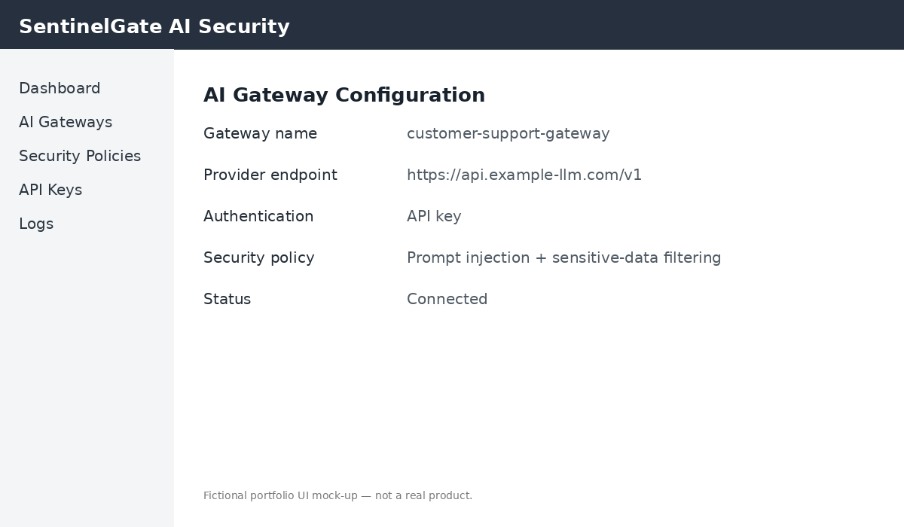

Quickstart: Configure a Gateway
Use this procedure to configure a development gateway and send a test request.
The gateway is ready to accept test requests.
Verify the configuration
Confirm that the gateway returns an HTTP 200 response. If the request is blocked, review
the security policy and event log.
